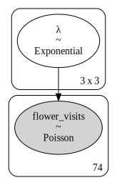
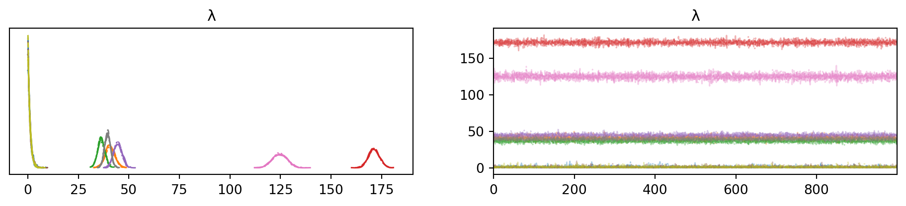

import requests
from bs4 import BeautifulSoup
import pandas as pd
from io import StringIO
# URL of the Stack Exchange question
url = "https://stats.stackexchange.com/q/651343/69508"
# Send a request to the URL
response = requests.get(url)
response.raise_for_status()Introduction
This post produces a model of flower visits as described in Geertje (2024). Here is the author’s description of the data:
My data consists of 3 variables, one is a numerical variable of the number of flower visits that I have counted on certain locations and on certain shrub species. My other 2 variables are categorical variables: Category ID (location), which can be either “RA”, “RN” or “UN” and Species, which can be either “Common hawthorn”, “Blackberry” or “Rose”.
Getting the Data
The first problem we have to solve is obtaining the data. This can be done with the requests Python library.
Parsing the Data
Just because we have successfully obtaining code from the target URL does not mean it is in a form for analysis. The next steps involve parsing the site response text using Beautiful Soup, a Python package dedicated to this very task. It will look through the HTML to identify the desired block of code which contains the example data, which I identified by looking for the substring "visits_df".
# Parse the HTML content using BeautifulSoup
soup = BeautifulSoup(response.text, 'html.parser')
# Find the code block containing the example data
code_blocks = soup.find_all('code')
# Search for the specific code block containing "visits_df"
example_data = ""
for block in code_blocks:
if "visits_df" in block.text:
example_data = block.text
break
# Clean the extracted example data
# Remove the non-tabular lines and headers
lines = example_data.split("\n")
data_lines = lines[2:] # Skip the first two lines of metadata
# Join the data lines into a single string
cleaned_data = "\n".join(data_lines)
# Convert the cleaned data into a pandas DataFrame
data = StringIO(cleaned_data)
# Try reading the data with a custom delimiter
df = pd.read_fwf(data, widths=[12, 24, 12], header=None, skiprows=1, names=['Category_ID', 'Species', 'Total_visits'])
df = df.drop(index=0)
df['Category_ID'] = df['Category_ID'].apply(lambda s: s.split(' ')[1])
df['Total_visits'] = df['Total_visits'].astype(int)from IPython.display import display, Markdown
display(Markdown(df.to_markdown(index=False)))| Category_ID | Species | Total_visits |
|---|---|---|
| UN | Common hawthorn | 22 |
| UN | Common hawthorn | 42 |
| UN | Common hawthorn | 3 |
| UN | Common hawthorn | 13 |
| UN | Common hawthorn | 76 |
| UN | Common hawthorn | 95 |
| UN | Common hawthorn | 53 |
| RN | Common hawthorn | 50 |
| RN | Common hawthorn | 18 |
| UN | Common hawthorn | 6 |
| UN | Common hawthorn | 16 |
| RA | Common hawthorn | 48 |
| RA | Common hawthorn | 63 |
| RA | Common hawthorn | 35 |
| RA | Common hawthorn | 40 |
| RN | Common hawthorn | 49 |
| RA | Common hawthorn | 25 |
| RA | Common hawthorn | 73 |
| RN | Common hawthorn | 107 |
| UN | Common hawthorn | 62 |
| UN | Common hawthorn | 60 |
| RN | Common hawthorn | 66 |
| RN | Common hawthorn | 29 |
| RN | Common hawthorn | 33 |
| RN | Common hawthorn | 79 |
| UN | Common hawthorn | 19 |
| UN | Common hawthorn | 16 |
| UN | Common hawthorn | 35 |
| UN | Common hawthorn | 43 |
| RN | Common hawthorn | 30 |
| RN | Common hawthorn | 27 |
| UN | Common hawthorn | 94 |
| UN | Common hawthorn | 54 |
| RN | Blackberry | 126 |
| RN | Blackberry | 145 |
| RN | Blackberry | 145 |
| UN | Blackberry | 93 |
| UN | Blackberry | 173 |
| RA | Rose | 17 |
| RA | Rose | 26 |
| RA | Rose | 44 |
| RA | Rose | 9 |
| RA | Rose | 18 |
| UN | Blackberry | 144 |
| RN | Blackberry | 129 |
| RN | Blackberry | 168 |
| RN | Blackberry | 334 |
| RN | Blackberry | 342 |
| RN | Blackberry | 306 |
| RN | Blackberry | 283 |
| UN | Blackberry | 308 |
| RN | Blackberry | 266 |
| RN | Blackberry | 244 |
| RA | Rose | 44 |
| RA | Rose | 36 |
| RA | Rose | 62 |
| RA | Rose | 85 |
| UN | Blackberry | 106 |
| RN | Blackberry | 123 |
| RN | Blackberry | 153 |
| RN | Blackberry | 198 |
| UN | Blackberry | 181 |
| RA | Rose | 58 |
| UN | Blackberry | 64 |
| RN | Blackberry | 150 |
| RN | Blackberry | 85 |
| RN | Blackberry | 114 |
| RN | Blackberry | 137 |
| UN | Blackberry | 84 |
| RN | Blackberry | 121 |
| RN | Blackberry | 148 |
| RN | Blackberry | 104 |
| RN | Blackberry | 117 |
| UN | Blackberry | 93 |
df.groupby(by=['Category_ID', 'Species']).describe()| Total_visits | |||||||||
|---|---|---|---|---|---|---|---|---|---|
| count | mean | std | min | 25% | 50% | 75% | max | ||
| Category_ID | Species | ||||||||
| RA | Common hawthorn | 6.0 | 47.333333 | 17.940643 | 25.0 | 36.25 | 44.0 | 59.25 | 73.0 |
| Rose | 10.0 | 39.900000 | 23.689895 | 9.0 | 20.00 | 40.0 | 54.50 | 85.0 | |
| RN | Blackberry | 22.0 | 179.000000 | 78.893539 | 85.0 | 123.75 | 146.5 | 232.50 | 342.0 |
| Common hawthorn | 10.0 | 48.800000 | 27.919726 | 18.0 | 29.25 | 41.0 | 62.00 | 107.0 | |
| UN | Blackberry | 9.0 | 138.444444 | 75.394149 | 64.0 | 93.00 | 106.0 | 173.00 | 308.0 |
| Common hawthorn | 17.0 | 41.705882 | 29.203520 | 3.0 | 16.00 | 42.0 | 60.00 | 95.0 | |
Model Definition
Now that we have the data loaded, let’s define the basic model.
import pymc as pm
import pandas as pd
import numpy as np
import arviz as az
# Convert categorical columns to integer indices
df['Category_ID_code'] = pd.Categorical(df['Category_ID']).codes
df['Species_code'] = pd.Categorical(df['Species']).codes
# Coordinates for PyMC
coords = {
'locations': df['Category_ID'].unique(),
'species': df['Species'].unique()
}
with pm.Model() as model:
# Define priors for λ
num_categories = len(df['Category_ID'].unique())
num_species = len(df['Species'].unique())
λ = pm.Exponential('λ', 1.0, shape=(num_categories, num_species))
# Define the observed data
indices = (df['Category_ID_code'].values, df['Species_code'].values)
observed_data = df['Total_visits'].values
# Likelihood
likelihood = pm.Poisson('flower_visits', mu=λ[indices], observed=observed_data)Here is the model diagram:
pm.model_to_graphviz(model)
Model Fitting
# Sample from the posterior
rng = np.random.default_rng(2018)
with model:
trace = pm.sample(random_seed=rng)Auto-assigning NUTS sampler...
Initializing NUTS using jitter+adapt_diag...
Multiprocess sampling (4 chains in 4 jobs)
NUTS: [λ]Sampling 4 chains for 1_000 tune and 1_000 draw iterations (4_000 + 4_000 draws total) took 4 seconds.Model Evaluation
az.summary(trace, round_to=2)| mean | sd | hdi_3% | hdi_97% | mcse_mean | mcse_sd | ess_bulk | ess_tail | r_hat | |
|---|---|---|---|---|---|---|---|---|---|
| λ[0, 0] | 0.99 | 1.00 | 0.00 | 2.75 | 0.01 | 0.01 | 3723.09 | 1935.70 | 1.0 |
| λ[0, 1] | 40.69 | 2.40 | 36.21 | 45.19 | 0.03 | 0.02 | 6629.64 | 2873.26 | 1.0 |
| λ[0, 2] | 36.33 | 1.80 | 32.93 | 39.70 | 0.02 | 0.02 | 6446.17 | 3038.56 | 1.0 |
| λ[1, 0] | 171.28 | 2.69 | 166.12 | 176.13 | 0.03 | 0.02 | 6772.84 | 2575.78 | 1.0 |
| λ[1, 1] | 44.48 | 2.02 | 40.63 | 48.10 | 0.03 | 0.02 | 6305.76 | 2624.26 | 1.0 |
| λ[1, 2] | 0.98 | 0.98 | 0.00 | 2.81 | 0.01 | 0.01 | 4000.65 | 2258.35 | 1.0 |
| λ[2, 0] | 124.64 | 3.55 | 118.41 | 131.67 | 0.04 | 0.03 | 7057.26 | 2636.12 | 1.0 |
| λ[2, 1] | 39.46 | 1.50 | 36.66 | 42.29 | 0.02 | 0.01 | 6620.37 | 3165.95 | 1.0 |
| λ[2, 2] | 0.97 | 0.96 | 0.00 | 2.69 | 0.01 | 0.01 | 3695.58 | 1671.51 | 1.0 |
# Inspect the trace
with model:
pm.plot_trace(trace)

References
Geertje. 2024. “I Have Count Data, but It Does Not Follow a Poisson Distribution, What to Do?” Cross Validated. https://stats.stackexchange.com/q/651343.